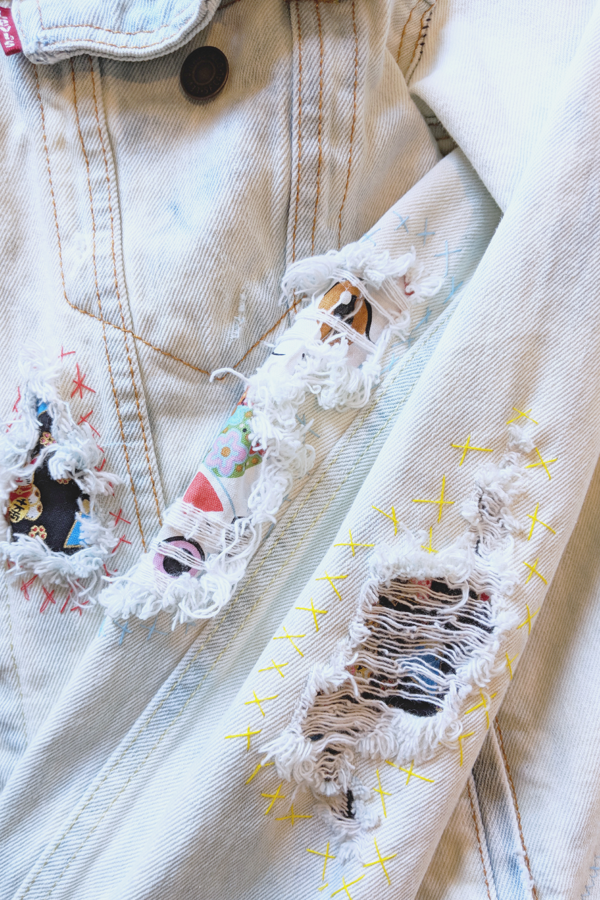
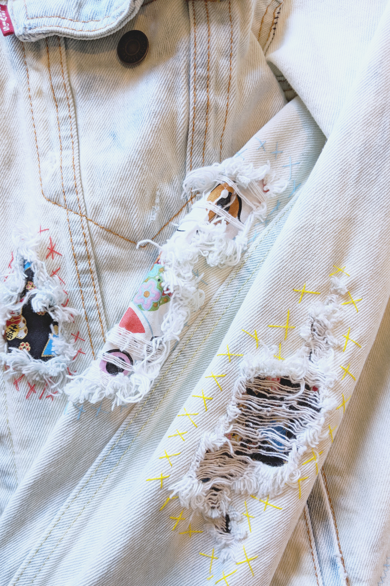

Levi's and Oaklandish have partnered with ten of the top creatives in the Bay Area for an artist market and customization exhibition called [RE]VIS. Curated by Ant Banks w/ DJ JACK, SWEETEST THREAT, & SHRGGS providing the tunes!
The Levi's Denim Trucker is a timeless staple piece. Each artist will have two customized two truckers on display and will be doing a live customization of another jacket in-store during the event. This collection of custom jackets will feature different mediums of customization ranging from denim reconstruction, distressing and original art directly on the jackets themselves. These original custom jackets will be available for purchase at the event, and on display at the Oaklandish downtown shop through May 6th.
Spring 2018
 
